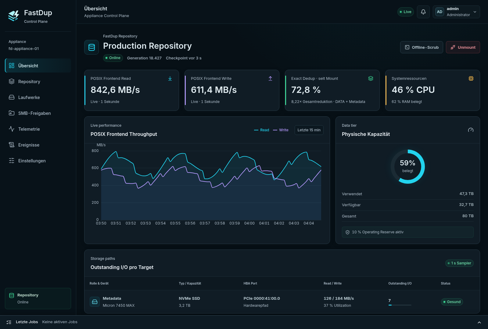
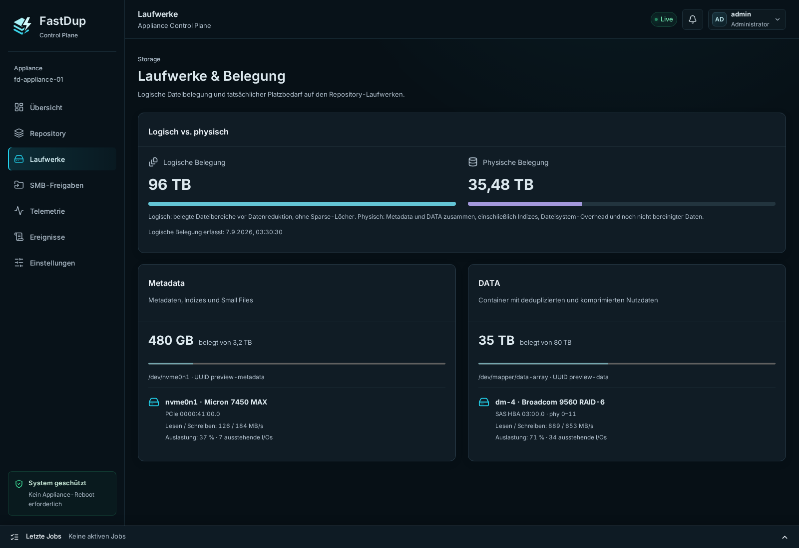
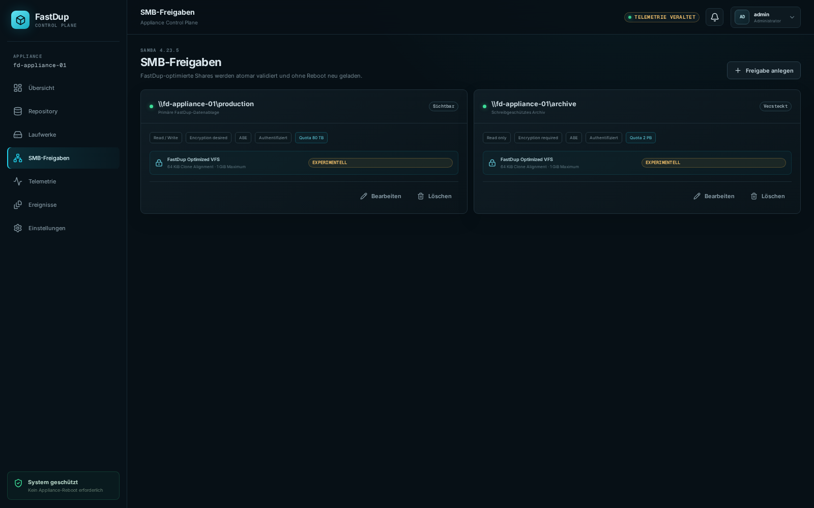

SOFTWARE-DEFINIERTER STORAGE FÜR X86-64
SOFTWARE-DEFINED STORAGE FOR X86-64
Mach aus deiner Kiste eine High-Performance Dedup-Appliance.
Turn your box into a high-performance dedup appliance.
Geeignete x86-64-Hardware, Rocky Linux und zwei Storage-Tiers genügen. Ein RPM liefert POSIX/FUSE, SMB, eine mehrstufige Reduction-Pipeline und die komplette HTTPS-WebUI.
Suitable x86-64 hardware, Rocky Linux, and two storage tiers are enough. One RPM delivers POSIX/FUSE, SMB, a multi-stage reduction pipeline, and the complete HTTPS WebUI.
v0.5.0Rocky Linux 10x86-64kein Spezial-Controller nötigno special controller required

Deine Hardware · eine ApplianceYour hardware · one appliance
Standard x86-64softwaredefinierte Appliancesoftware-defined appliance
1.022,1 MiB/s1,022.1 MiB/saktueller SMB-Aggregatdurchsatzcurrent aggregate SMB throughput
49,07× DATA49.07× DATA46,87× inklusive Metadaten46.87× including metadata
HTTPS WebUIProvisionierung bis Telemetrieprovisioning through telemetry
BRING YOUR OWN HARDWARE
Deine Hardware. Deine Platten. Deine Dedup-Appliance.
Your hardware. Your drives. Your dedup appliance.
fastdup ist keine Hardware-Appliance mit festem Chassis. Installiere Rocky Linux 10 auf einem geeigneten x86-64-System, stelle einen schnellen Metadata-Tier und einen separaten DATA-Tier bereit und verwandle die Maschine per RPM in einen FUSE-/SMB-Speicher mit transparenter Datenreduktion.
fastdup is not tied to a fixed appliance chassis. Install Rocky Linux 10 on a suitable x86-64 system, provide a fast metadata tier and a separate DATA tier, and turn the machine into FUSE/SMB storage with transparent data reduction by installing one RPM.
Für den produktiven Schreibbetrieb verlangt fastdup zwei physisch getrennte XFS-Dateisysteme. Gerätespiegelung oder RAID bleiben bewusst Aufgabe des Block-Layers.
Production writes require two physically separate XFS filesystems. Device mirroring or RAID deliberately remains the block layer's responsibility.
MEASURED, NOT PROJECTED
Hoher Durchsatz auf einer kleinen Notebook-CPU-VM.
High throughput on a small notebook-CPU VM.
Der Messhost war keine große Storage-CPU: eine VM auf einem Intel Core i7-1370P aus der Notebook-Klasse, mit nur zehn sichtbaren logischen CPUs, AVX2/BMI2 und ohne AVX-512. Der aktuelle SMB-Lauf blieb dabei bei 569,5 MB Peak RSS und 0 Byte Prozess-Swap.
The measured host was not a large storage CPU: a VM on a notebook-class Intel Core i7-1370P, exposing only ten logical CPUs, with AVX2/BMI2 and no AVX-512. The current SMB run stayed at 569.5 MB peak RSS and zero bytes of process swap.
Drei Kopien testen nicht das maximale Reduction-Potenzial.
Three copies do not test the maximum reduction potential.
Bei drei identischen Kopien kann reine Exact-Dedup höchstens 66,67 % einsparen. fastdup erreicht im dauerhaften SMB-Lauf 67,78 % inklusive Metadaten—dank zusätzlicher Reduction-Stufen sogar etwas mehr als dieses reine Dedup-Limit. Im aktuellen Live-Test mit 50 minimal veränderten ISO-Versionen steigt das Verhältnis auf 49,07× für DATA beziehungsweise 46,87× inklusive sämtlicher Metadaten.
With three identical copies, exact dedup alone can save at most 66.67%. fastdup reaches 67.78% in the durable SMB run including metadata—additional reduction stages push it slightly beyond that dedup-only limit. In the current live test with 50 minimally changed ISO versions, the ratio rises to 49.07× for DATA and 46.87× including all metadata.
SMB-Aggregat
aggregate SMB
Drei serielle ISO-Uploads im aktuellen Produktionspfad.
Three serial ISO uploads on the current production path.
END-TO-END · CURRENT RUNErster physischer Upload
first physical upload
Neue Chunks inklusive Container-Publication auf den DATA-Tier.
New chunks including container publication to the DATA tier.
END-TO-END · COPY 1Exact-Wiederholung
exact repeat
Schnellste Einzelkopie im selben bytegenau geprüften SMB-Lauf.
Fastest individual copy in the same byte-verified SMB run.
END-TO-END · COPY 3Dedup-Limit erreicht
dedup limit reached
Reine Exact-Dedup ist bei drei identischen Kopien auf 66,67 % begrenzt.
Exact dedup alone is capped at 66.67% with three identical copies.
3,104× GESAMT · INKLUSIVE METADATEN3.104× TOTAL · INCLUDING METADATASeqCDC AVX2/BMI2
Isolierter 1-MiB-Slice-Scanner über die Rocky-ISO.
Isolated 1 MiB-slice scanner over the Rocky ISO.
MICROBENCHMARK · 6.223 MiB/s SKALARMICROBENCHMARK · 6,223 MiB/s SCALAR50 Live-Versionen
50 live versions
400 unterschiedliche Byte-Änderungen; alle 50 Dateien vollständig BLAKE3-verifiziert.
400 distinct byte edits; all 50 files fully verified with BLAKE3.
CURRENT FUSE PATH · 97.96% DATA SAVINGReduction ist abhängig von Datenmix, Änderungsrate und Aufbewahrung. Der aktuelle Wert misst exakt 50 gleichzeitig live gehaltene, minimal veränderte ISO-Versionen: 103,62 GB logisch gegenüber 2,11 GB DATA und 99,27 MB Metadaten. Die Scratch-Tiers lagen für diesen Reduction-Test auf RAM; deshalb ist er keine Geräte-Performance-Messung. Advanced Reduction und GC waren aus. Alle Werte sind workload- und hostabhängig und keine SLA.
Reduction depends on data mix, change rate, and retention. The current result measures exactly 50 simultaneously live, minimally changed ISO versions: 103.62 GB logical versus 2.11 GB DATA and 99.27 MB of metadata. The scratch tiers were RAM-backed for this reduction test, so it is not a device-performance measurement. Advanced Reduction and GC were off. All results are workload- and host-specific, not an SLA.
MULTI-STAGE DATA REDUCTION
Mehr als die klassische Exact-Dedup-plus-Kompression-Pipeline.
Beyond the classic exact-dedup-plus-compression pipeline.
fastdup verbindet mehrere unabhängige Reduction-Stufen und veröffentlicht ihre Grenzen, Entscheidungen und Formate. Welche internen Verfahren proprietäre Legacy-Appliances kombinieren, ist nicht vollständig offengelegt und deshalb nicht seriös zählbar—vergleichbar ist hier die offen dokumentierte Pipeline.
fastdup combines several independent reduction stages and publishes their boundaries, decisions, and formats. Proprietary legacy appliances do not fully disclose every internal technique, so a numeric technique count would not be defensible—the meaningful difference is this openly documented pipeline.
Der belastbare UnterschiedThe defensible difference
Dell Data Domain und HPE StoreOnce heben öffentlich vor allem Inline-Deduplizierung plus Kompression hervor. fastdup dokumentiert zusätzlich Sparse-/FILL-Repräsentation, metadata-only Clone-Reuse und optional Similarity-geführte Depth-1-Zstd-Prefixes. Das ist ein breiter dokumentierter Stack—keine Behauptung über unbekannte proprietäre Interna.
Dell Data Domain and HPE StoreOnce publicly emphasize inline deduplication plus compression. fastdup additionally documents sparse/FILL representation, metadata-only clone reuse, and optional similarity-guided depth-1 Zstd prefixes. That is a broader documented stack—not a claim about unknown proprietary internals.
SeqCDC-v1
Content-Defined Chunking findet stabile Grenzen trotz Einfügungen und Verschiebungen.
Content-defined chunking finds stable boundaries across insertions and shifts.
BLAKE3 Exact Dedup
Identische Chunks werden bytegenau geprüft und nur einmal physisch referenziert.
Identical chunks are byte-verified and physically referenced only once.
HOLE + FILL
Sparse Nullbereiche benötigen keinen DATA-Record; konstante Bytebereiche werden als FILL abgebildet.
Sparse zero ranges need no DATA record; constant-byte ranges become FILL extents.
Gruppiertes Zstd
Grouped Zstd
Benachbarte Chunks teilen begrenzte Compression Regions; Zstd gewinnt nur oberhalb der versionierten Sparschwelle.
Neighboring chunks share bounded compression regions; Zstd wins only above the versioned saving threshold.
Metadata Fast Clone
copy_file_range klont bereits unveränderliche Extents, ohne DATA erneut zu lesen oder zu speichern.
copy_file_range clones immutable extents without rereading or storing DATA again.
Similarity + ZSTD_PREFIX
Ein rebuildbarer Similarity Index wählt unabhängig dekodierbare Depth-1-Prefix-Bases.
A rebuildable similarity index selects independently decodable depth-1 prefix bases.
Zstd-Dictionaries
Zstd dictionaries
Inhaltsidentifizierte Dictionaries für wiederkehrende strukturierte Datenfamilien.
Content-identified dictionaries for recurring structured-data families.
Sparse-XOR Delta
Begrenzte Depth-1-Deltas für ähnliche Chunks mit wenigen geänderten Bytes.
Bounded depth-1 deltas for similar chunks with only a few changed bytes.
Auf Performance ausgelegt:Designed for performance:
AVX2/BMI2-SeqCDC, paralleles BLAKE3, worker-lokale Zstd-Kontexte, mmap-basierte Indizes, io_uring-Publication und begrenzte Worker-/Speicherbudgets parallelisieren und begrenzen die Pipeline.
AVX2/BMI2 SeqCDC, parallel BLAKE3, worker-local Zstd contexts, mmap-backed indexes, io_uring publication, and bounded worker/memory budgets parallelize and bound the pipeline.
CONTROL PLANE
CONTROL PLANE
Die alltägliche Verwaltung bleibt in der WebUI.
Everyday administration stays in the WebUI.
Kein separater Management-Server und keine Gerätepfade per Copy-and-paste. Die lokale Control Plane zeigt nur erkannte Targets und schützt kritische Aktionen durch explizite Bestätigungen.
No separate management server and no copy-pasted device paths. The local control plane exposes only discovered targets and guards critical actions with explicit confirmation.
Speicher provisionieren
Provision storage
Metadata und DATA anhand stabiler Identitäten auswählen. Root-, Boot-, Swap- und überlappende Geräte werden ausgeschlossen.
Select metadata and DATA by stable identity. Root, boot, swap, and overlapping devices are excluded.
Shares bereitstellen
Publish shares
SMB-Freigaben, Benutzer/Gruppen, Read-only, Verschlüsselung, ABE und logische Quotas zentral verwalten.
Manage SMB shares, users/groups, read-only state, encryption, ABE, and logical quotas centrally.
Betrieb überwachen
Monitor operations
Durchsatz, Reduktion, Kapazität, CPU/RAM, Disk-I/O, Checkpoints, Jobs und Alarme auf einen Blick.
See throughput, reduction, capacity, CPU/RAM, disk I/O, checkpoints, jobs, and alarms at a glance.
Sicher warten
Maintain safely
Mount, sauberer Unmount, Offline-Scrub, GC-Policy, Wartungsfenster, Audit-Export und TLS-Verwaltung.
Mount, clean unmount, offline scrub, GC policy, maintenance windows, audit export, and TLS management.
01
Sichere Laufwerksauswahl
Safe drive selection
Gerätemodell, Seriennummer, WWN, Kapazität und HBA-Pfad vor der Provisionierung kontrollieren.
Verify model, serial, WWN, capacity, and HBA path before provisioning.

02
SMB-Shares ohne Konfigurationsdateien
SMB shares without config files
Freigaben und logische Quotas ändern, ohne Samba-Konfiguration manuell zu editieren oder die Appliance neu zu starten.
Change shares and logical quotas without manually editing Samba configuration or rebooting the appliance.

Screenshots aus der echten React-WebUI mit den mitgelieferten Preview-Daten.
Screenshots from the real React WebUI using its bundled preview data.
ROCKY LINUX 10 · X86-64
In drei Befehlen zur WebUI.
Three commands to the WebUI.
Das RPM bringt Runtime, Maintenance-CLI, Control Plane, WebUI, systemd-Policies und Samba-VFS-Modul mit. Node.js oder eine Rust-Toolchain sind auf dem Zielsystem nicht nötig.
The RPM includes the runtime, maintenance CLI, control plane, WebUI, systemd policy, and Samba VFS module. The target system needs neither Node.js nor a Rust toolchain.
- Paket installierenInstall the packageRPM herunterladen und mit DNF installieren.Download the RPM and install it with DNF.
- Management startenStart managementAgent und HTTPS-Control-Plane aktivieren.Enable the agent and HTTPS control plane.
- Im Browser einrichtenSet up in the browserPasswort ändern, zwei leere Geräte auswählen, Repository mounten und Share anlegen.Change the password, select two empty devices, mount the repository, and add a share.
root@rocky:~
$ curl -LO https://github.com/ThatIsCraZy/fastdup/releases/download/v0.5/fastdup-0.5.0-1.el10.x86_64.rpm
$ sudo dnf install ./fastdup-0.5.0-1.el10.x86_64.rpm
$ sudo systemctl enable --now fastdup-agent.service fastdup-control.serviceWebUI: https://<appliance-host>:8080/WebUI: https://<appliance-host>:8080/
Vor der Provisionierung:Before provisioning:
Zwei leere, physisch getrennte Geräte bereitstellen. Die Initialisierung löscht Partitionstabellen und Inhalte der ausgewählten Geräte. Das Paket formatiert beim Installieren nichts automatisch.
Provide two empty, physically separate devices. Initialization erases partition tables and content on the selected devices. Package installation never formats anything automatically.
STATUS
Offen entwickelt. Ehrlich begrenzt.
Openly developed. Honestly limited.
fastdup ist ein Forschungsprototyp für Evaluation und Storage-Entwicklung, noch kein produktionsreifes Backup-Produkt.
fastdup is a research prototype for evaluation and storage development—not yet a production backup product.
Alle Grenzen in der README → Read all limits →- Kein Schutz vor Geräteverlust, keine Replikation oder WORM-Garantie
- No device-loss protection, replication, or WORM guarantee
- POSIX-/Samba-Kompatibilitätsmatrix noch unvollständig
- POSIX/Samba compatibility matrix remains incomplete
- Samba Fast Clone experimentell und noch nicht Veeam-qualifiziert
- Samba Fast Clone is experimental and not yet Veeam-qualified
- Kein Produktions-Support oder Performance-SLA
- No production support or performance SLA
WebUI ansehen. RPM installieren. fastdup testen.
See the WebUI. Install the RPM. Evaluate fastdup.
Release 0.5.0 für Rocky Linux 10 auf x86-64.
Release 0.5.0 for Rocky Linux 10 on x86-64.